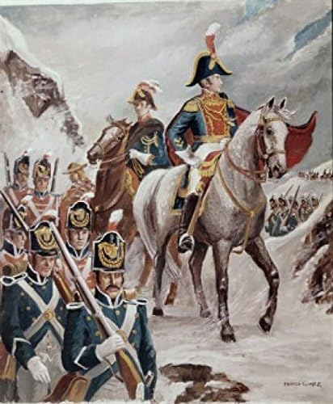

Simón Bolívar
Título Histórico: El Libertador
🗡 El Libertador de Naciones
Nacido en Caracas en 1783, Simón Bolívar es una de las figuras políticas y militares más brillantes de la historia universal. Fue el líder fundamental de las gestas independentistas que rompieron las cadenas del imperio español, logrando la liberación de Venezuela, Colombia, Ecuador, Panamá, Perú y la fundación de Bolivia.
🤝 El Sueño de la Gran Colombia
El mayor proyecto político de Bolívar fue la creación de La Gran Colombia (1819-1831). Esta mega nación caribeña y andina estuvo conformada por los territorios actuales de Venezuela, Colombia, Ecuador y Panamá. El Libertador concibió este estado gigante con el objetivo de consolidar una potencia económica y militar americana lo suficientemente fuerte como para defender su independencia frente a cualquier otra potencia extranjera.
🧭 Conexión con el Cono Sur: San Martín y O'Higgins
La visión de Bolívar no se limitó al norte. Su pensamiento continental influyeron profundamente en los próceres del sur. Mantuvo correspondencia estratégica y de mutua admiración con el chileno Bernardo O'Higgins. El punto culminante de la cooperación del sur y el norte ocurrió en la histórica Entrevista de Guayaquil (1822), donde Bolívar se reunió cara a cara con el general argentino José de San Martín para coordinar de forma definitiva la derrota militar absoluta de las fuerzas realistas en Sudamérica.
🏛 Un Pensamiento Republicano Mundial
Más allá de las batallas, Bolívar destacó por su genio escrito e ideológico. Documentos como el Manifiesto de Cartagena y la Carta de Jamaica delinearon los conceptos de libertad, unión latinoamericana y democracia republicana. Su impacto es tal que hoy en día existen plazas, monumentos y estatuas en su honor en capitales de todo el mundo, desde París y Londres hasta Washington y Santiago de Chile.
💡 Una curiosidad asombrosa
Simón Bolívar es la única persona en la historia del continente americano que ha dado nombre a toda una nación soberana (Bolivia), además de renombrar constitucionalmente a su tierra natal como República Bolivariana de Venezuela. Recorrió a caballo más de 70.000 kilómetros durante sus campañas, una distancia que equivale a dar dos vueltas completas al planeta Tierra.
Acá lo vemos en una de sus expediciones más asombrosas cruzando los andes colombianos con su ejército.
